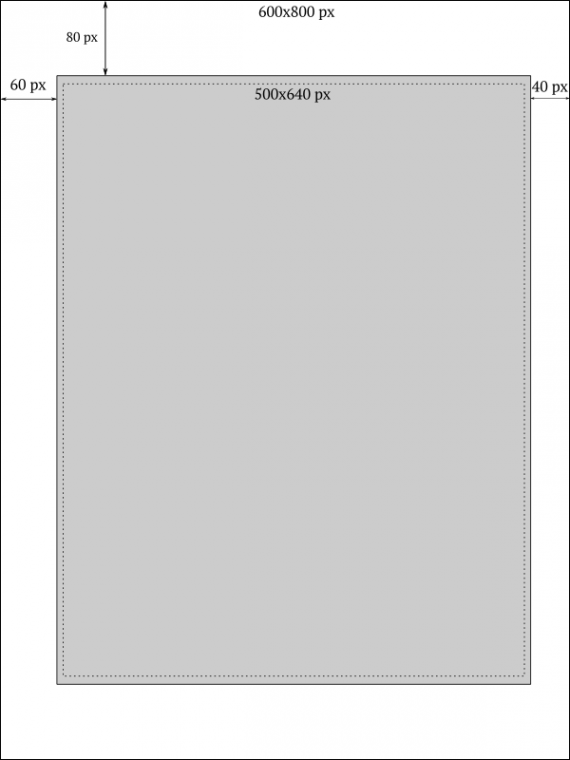

Программа convert служит для конвертации форматов графических файлов, и для различных преобразований изображений.
Общий синтаксис команды такой:
convert infile.jpg [действия] outfile.png
Если действия не указаны, convert по расширениям файлов поймет, из какого формата в какой нужно преобразовывать, и создаст новый файл указанного формата.
Действия выполняются над изображением перед тем, как будут записаны в выходной файл. Выходной файл может иметь то же расширение, что и исходный. Например:
convert infile.jpg -resize 50% outfile.jpg
эта команда уменьшит JPG файл infile.jpg в два раза и запишет результат в виде JPG файла outfile.jpg.
Можно в качестве выходного файла указывать исходный файл. В этом случае исходный файл будет заменен новым файлом, полученным в результате преобразований. Например:
convert infile.jpg -resize 50% -sharpen 3 infile.jpg
эта команда смасштабирует (уменьшит) изображение в файле infile.jpg в два раза, применит фильтр резкости, и запишет результат под тем же именем, удалив предыдущий файл.
Кадрирование осуществляется простой командой:
convert -crop {size}{+-}x{+-}y input.png output.png
На деле это выглядит так:
convert -crop 500x640+60+80 input.png output.png
Чтобы понять что значит эта команда, необходимо обратиться к рисунку.
